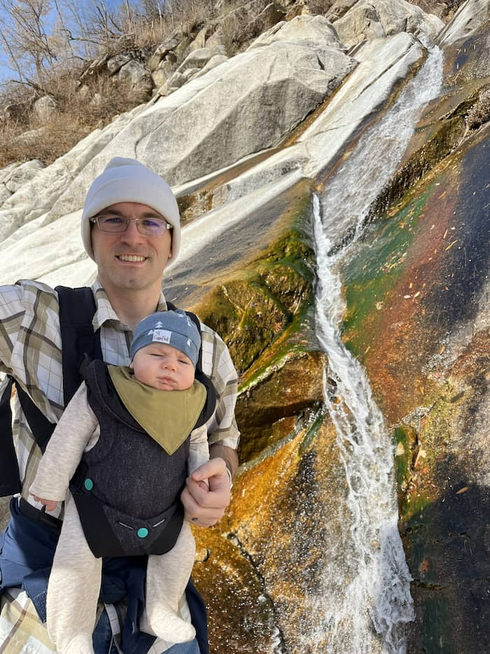

Home
About Me
I live in Bluffdale, Utah, with my wife and child. I got married in June 2024, and our baby was born 16 months later. 😊 I'm currently studying Software Development through BYU Pathway. I’ve earned around 80 combined credits from several universities, but I’m working toward completing my Bachelor's degree before starting my career. Outside of school, I enjoy spending time with my family—hiking, reading, visiting loved ones, cooking, listening to audiobooks, and playing games.
Student Photo
